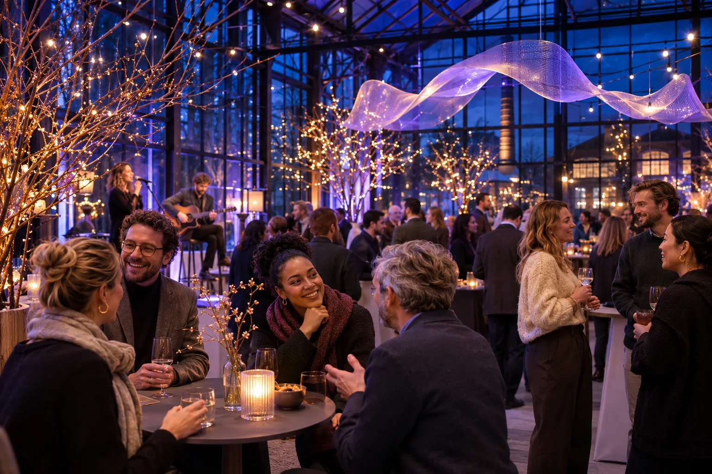

Licht in de winterWinterlicht
Company Night
Company Night
29JAN
2027
2027
Privé-event · Alleen op uitnodiging
Vrijdag 29 januari 2027
Warmte in het hart van de winter.
Borealis Works luidt het nieuwe jaar in met een walking dinner, sprankelende lichtkunst en een intieme liveset tussen de winterbomen.
Tijd18:00–00:30
LocatieGlashal Utrecht
DresscodeWarm & stijlvol
De avond in het kort
- Ontvangst bij het wintervuur
- Walking dinner & lichtbeleving
- Live act, borrel & dansvloer
Persoonlijke uitnodigingBekijk en beheer jouw deelname